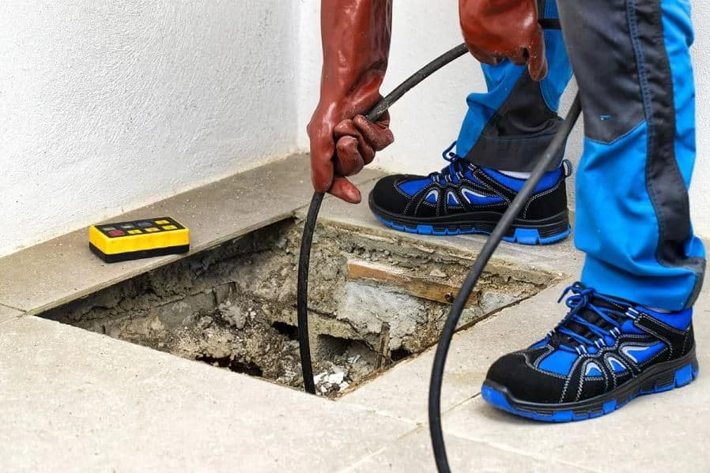
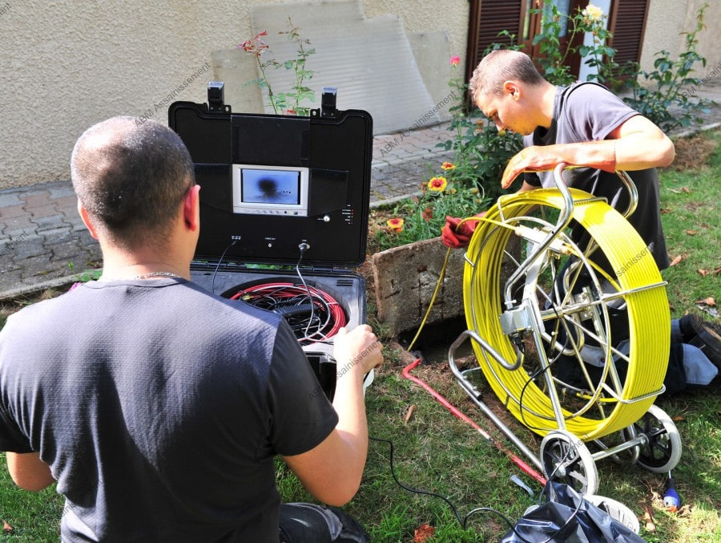
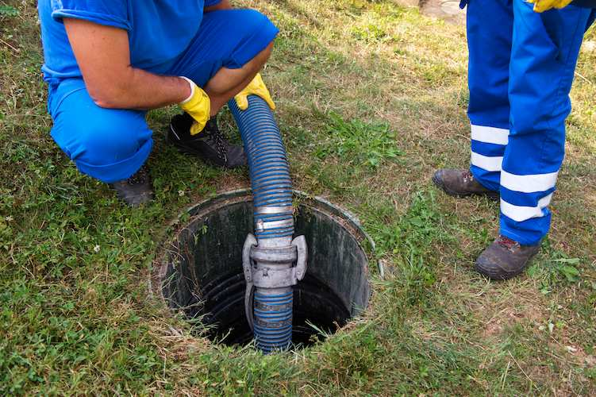
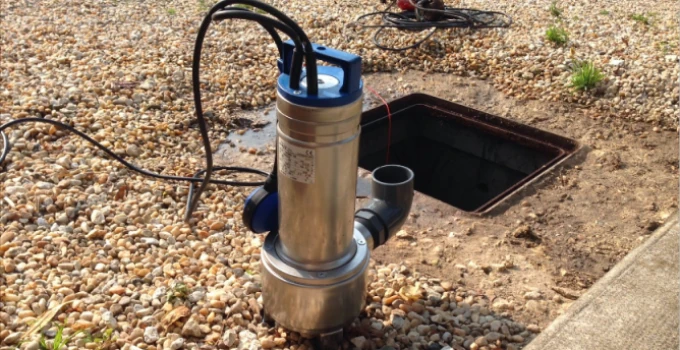

Vidange Fosse Septique Solers - Debouchage canalisations Solers
DEVIS GRATUITAssainissement à Solers

Débouchage des canalisations Solers : Vous avez des canalisations obstruées à Solers ? Notre équipe intervient rapidement pour éliminer tout bouchon et garantir un écoulement fluide. Nous utilisons des techniques avancées pour un résultat efficace et durable.
Nettoyage canalisations Solers : Offrez à vos canalisations un entretien optimal grâce à notre service de curage à Solers. Un nettoyage régulier permet de prévenir les bouchons et d’assurer le bon fonctionnement de votre réseau d’assainissement.


Inspection caméra Solers : Identifiez les problèmes cachés dans vos canalisations grâce à notre service d’inspection par caméra à Solers. Nous détectons avec précision les fissures, obstructions et autres anomalies pour une intervention ciblée.
Pompage - vidange Solers : Assurez l’entretien de votre fosse septique à Solers avec notre service de pompage et vidange. Nous intervenons rapidement pour garantir le bon fonctionnement de votre installation et éviter les désagréments.


Pompe de relevage Solers : Gérez efficacement l’évacuation de vos eaux usées à Solers grâce à notre service d’installation et d’entretien de pompe de relevage. Profitez d’un équipement fiable pour une meilleure gestion des eaux.
Urgence Solers : Un problème urgent avec vos canalisations à Solers ? Notre équipe est disponible 24h/24 et 7j/7 pour intervenir rapidement et vous apporter une solution efficace à vos soucis d’assainissement.
Débouchez vos canalisations de tout engorgement avec notre service de debouchage de canalisation. Dotés d'une expertise technique pointue et d'une approche attentive, nous nous engageons à restaurer la fluidité de vos canalisations.
CONTACTEZ - NOUS
Offrez à vos canalisations un nettoyage en profondeur grâce à notre service de curage. Le curage régulier de vos canalisations permet de prévenir les obstructions et les dysfonctionnements. Faites confiance à notre équipe pour assurer le bon fonctionnement de votre assainissement individuel.
CONTACTEZ - NOUSPlongez dans une perspective inédite de vos installations grâce à notre service de passage de caméra. Avec une expertise technique pointue et une approche méticuleuse, nous vous offrons une vision détaillée de l'intérieur de vos canalisations.
CONTACTEZ - NOUSAvec une expertise spécialisée dans le pompage de fosses septiques, de bacs à graisse et le traitement des eaux usées, nous vous proposons des services complets pour assurer la propreté et le bon fonctionnement de vos installations.
CONTACTEZ - NOUSOptimisez le contrôle de vos eaux usées avec notre service de pompe de relevage de pointe. Que ce soit pour les eaux usées domestiques ou industrielles, notre équipe dédiée assure une gestion efficace grâce à nos pompes de relevage de qualité supérieure.
CONTACTEZ - NOUSEn cas d'urgence, nous sommes là pour vous. Notre équipe d'experts en assainissement se déplace rapidement et efficacement pour répondre à vos besoins critiques. Que ce soit pour un débouchage urgent, une inspection par caméra ou toute autre intervention nécessaire, comptez sur nous pour intervenir rapidement et résoudre vos problèmes d'assainissement.
CONTACTEZ - NOUSNOS TARIFS
ATTRACTIFS
Nous vous offrons des services d'assainissement de qualité à des prix attractifs. Notre engagement est de vous fournir des solutions efficaces sans compromettre votre budget. Contactez-nous dès maintenant pour découvrir nos tarifs avantageux et bénéficier d'un service fiable et professionnel.
DEVIS GRATUITNOS VALEURS
QUALITÉ
SYNONYME DE PASSION
La règle d’or de l’entreprise est de rendre à la clientèle un travail de qualité. Le respect du savoir faire et l’écoute permettent à eux seuls d’avoir une satisfaction client, et un résultat pérenne.
PASSION
SYNONYME DE PLAISIR
La passion du travail, passe par le plaisir. Une réalisation réussie est la clé d’un client satisfait. Chaque projet est unique et demande une personnalisation qui commence par l’écoute et le conseil.
ENGAGEMENT
SYNONYME DE RESPECT
L’engagement mutuel est une forme de respect. Le respect des lieux et de vous même garantissent un travail dans les meilleurs délais. Tout cela afin que vous puissiez vous sentir heureux dans vos locaux le plus rapidement possible.
CONFIANCE
SYNONYME DE SECURITÉ
La confiance dans une entreprise est le socle de la réussite. L’écoute des besoins de chacun ainsi que le conseil permet de créer un climat de confiance. Le résultat de cette confiance réciproque donnera une valeur ajoutée à vos intérieurs.